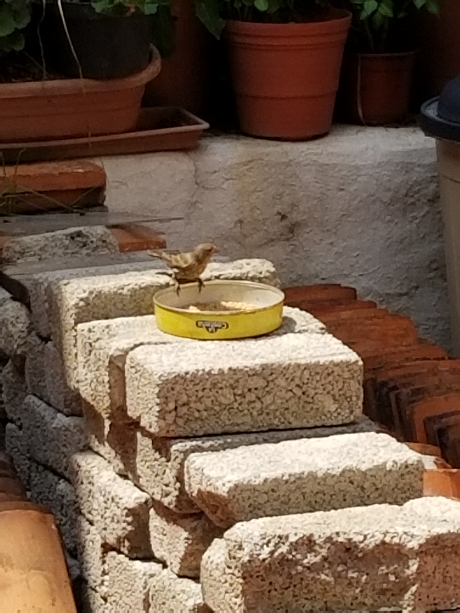
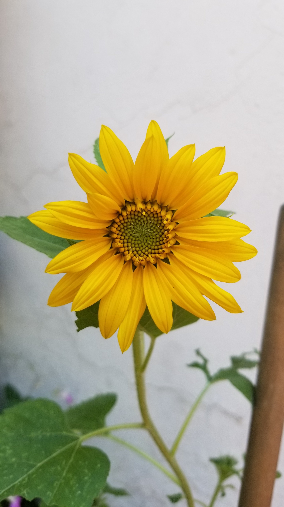
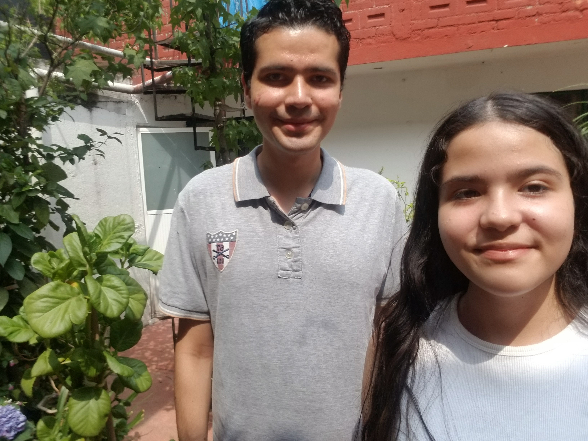

Video de la entrevista
Entrevista
- Hello good afternoon, can I make some questions for my interview it’s for my computer class?
- Ok, what is your name?
- Ok (name), what country are you from?
- What do you like most about Mexico?
- Oh, what's your favorite Mexican food?
- What places in Mexico do you know?
- Why did you come to Mexico?
- Ok thank you very much for the interview, it was a pleasure, Enjoy Mexico, bye.
Mi sentir de la entrevista
Bueno al principio estaba muy nerviosa porque no encontraba la persona correcta para hacerle la entrevista, considero que mi inglés es bastante bueno entonces no tuve que batallar al hablarlo, el entrevistado me entendió muy bien y pudimos crear una buena conversación. Fue divertido e interesante porque conocí a una persona extranjera y me puedo platicar un poco de lo que hace.
Fotos
|  |  |
|  |  |
 |
 |